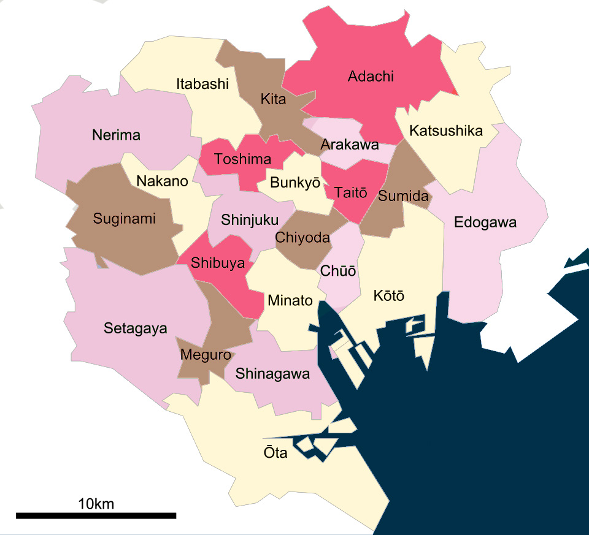

LOCALIZACIÓN Y TRANSPORTE

Localización
Tokio es la capital de Japón y una de las ciudades más grandes y avanzadas del mundo. Se encuentra en la isla principal de Honshu, en la región de Kantō, al este del país. La ciudad combina tecnología, tradición y una enorme red de transporte que conecta todos sus barrios y alrededores.
Tokio, Japón · 35°41′N 139°41′E
Transporte
Moverse por Tokio es una experiencia única. La ciudad cuenta con uno de los sistemas de transporte más avanzados y eficientes del mundo, capaz de conectar millones de personas cada día de forma rápida, segura y puntual.
Gracias a su enorme red de metro, trenes y autobuses, es posible llegar prácticamente a cualquier punto de la ciudad en pocos minutos.